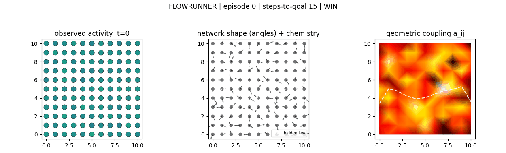
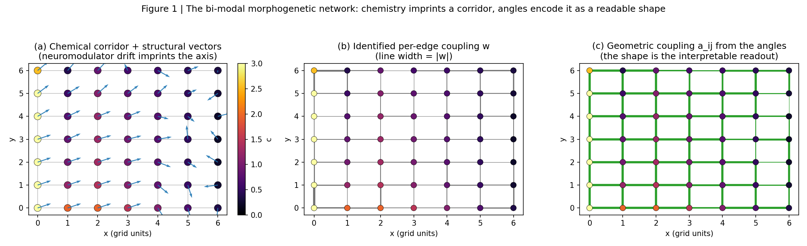
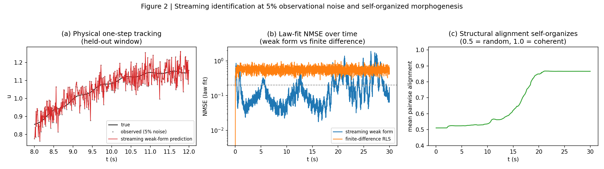
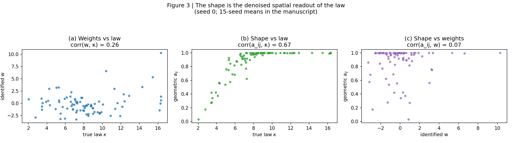
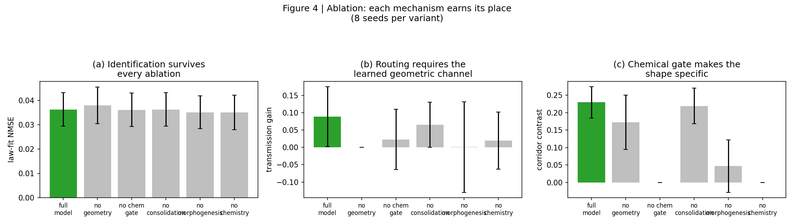
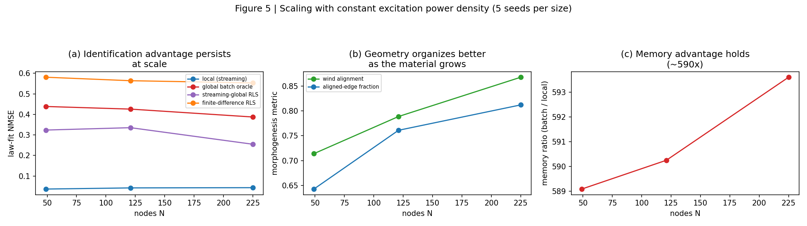
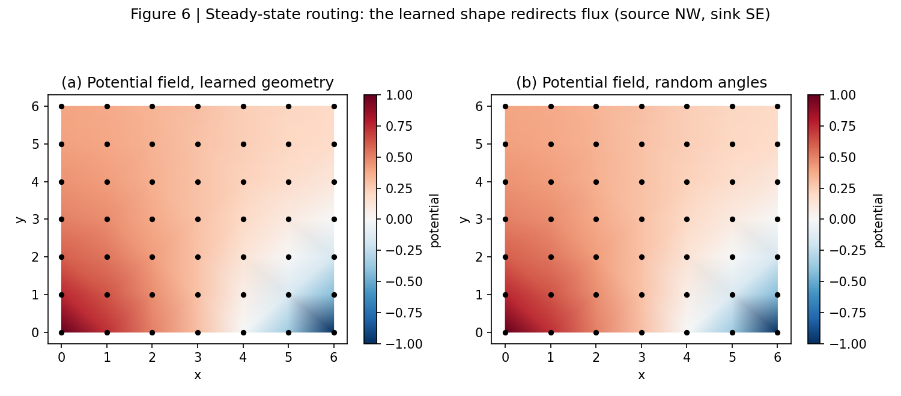
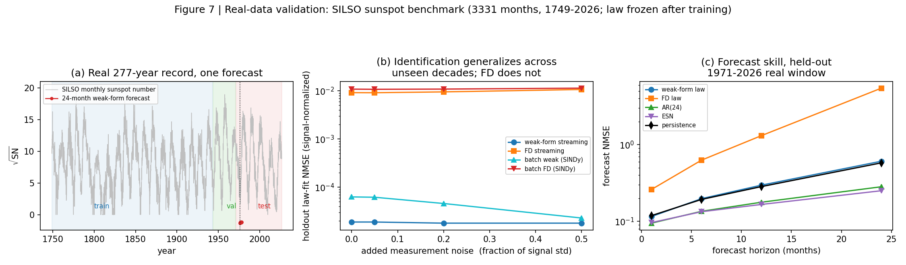

Weights aren't enough. Every neuron carries a 3D angle channel that multiplies the weight channel: weights say how strongly, angles say where. The network learns a physical law from noisy local observations with no global loss and no backpropagation, and its shape self-organizes into a readable, mechanistic map of what it learned — angles are the computation; the shape is the interpretable spectrum.
Classical neural networks connect neurons with scalar weights — a single, strength-only channel. This architecture adds a second compute paradigm: each neuron carries a 3D structural vector, and the effective connection between two neurons is a composition of two channels
κ_ij = base weight × chemical factor(c̄) × geometric factor( v̂_i · v̂_j )The weights are identified locally by a streaming, gradient-free learning rule (recursive least squares over weak-form spacetime integrals). The angles rotate toward nematic consensus — a deterministic contraction, gated by a slow chemical field — and the emergent shape steers the network's own computation: information flows along the learned geometry, and the shape is a spatially coherent, readable readout of the mechanism (angle-field ↔ true-law correlation r = 0.64, vs r = 0.35 for the raw weights).

holdout law-fit error advantage of the streaming weak form vs finite-difference identification on an unseen 27-year window of the SILSO sunspot record (1.9e-5 vs 9.1e-3); 99.3% of target variance explained, flat under up to 50% added measurement noise.
held-out law-fit NMSE 0.038 ± 0.009 vs 0.339 for the best streaming-global RLS (15 seeds) — per-node locality itself earns most of the advantage over global batch and finite-difference baselines.
the angle field reads back the true law vs r = 0.35 for the raw weights (better in 14/15 seeds); learned geometry raises axial corridor transmission in 12/15 seeds; routing strictly requires the learned geometric channel (ablation 6/8 → 0/8).
the composed material (weights × chemistry × shape) routes a maze it never saw at exactly oracle-level steps (14.0 vs 14.0) from noisy observations alone — while each channel alone fails (shape-only 50%, weights-only 75%).
less runtime memory than the frame-buffer batch estimator, and an identified-law state ~10× smaller than a reservoir computer (126 KB vs 1.25 MB) at comparable or better long-horizon behavior.
the identification advantage persists across grid sizes at constant power density (12× → 9× vs oracle), while self-organization coherence improves with scale (wind alignment 0.71 → 0.87).
| horizon | weak form (this work) | FD streaming | batch weak SINDy | batch FD SINDy | AR(24) | ESN | persistence |
|---|---|---|---|---|---|---|---|
| 1 mo | 0.116 | 0.260 | 0.117 | 0.187 | 0.095 | 0.096 | 0.119 |
| 6 mo | 0.197 | 0.627 | 0.204 | 0.309 | 0.135 | 0.133 | 0.193 |
| 12 mo | 0.296 | 1.310 | 0.310 | 0.527 | 0.177 | 0.166 | 0.284 |
| 24 mo | 0.607 | 5.449 | 0.628 | 1.561 | 0.282 | 0.251 | 0.578 |
real_benchmark.json.Single-column, journal-formatted submission draft with Methods and Data Availability. The ambition: a demonstrated physical-computing architecture. Current honest status: strong preprint / workshop submission; one hardware-in-the-loop demonstration away from a defensible NMI submission.
Two-column conference-formatted draft, submittable today to a solid workshop/short-paper venue on local learning or physical computing — a legitimate route to peer review and citations.
The complete working paper: theory of the weak form, controlled baselines, full ablation, scaling, real-data validation, eight documented failure modes, and references.







Python 3.9+; only numpy, matplotlib, and (for the game clip) Pillow are required.
pip install -r requirements.txt
python run_experiments.py --task sweep --seeds 15 --T 4000 --out results.json
python run_experiments.py --task ablation --seeds 8 --T 4000 --out ablation.json
python run_experiments.py --task scale --seeds 5 --T 4000 --sizes 7x7,11x11,15x15 --out scaling.json
python real_benchmark.py --out real_benchmark.json # real sunspot record (SILSO)
python flowgame.py --episodes 4 --out game # the maze game + animated clip
python make_figures.py
python test_biomaterial_net.py # 10 sanity testsAll numbers in the papers are produced by these scripts from the committed result
files (results.json, ablation.json, scaling.json,
real_benchmark.json) — nothing is hand-entered.